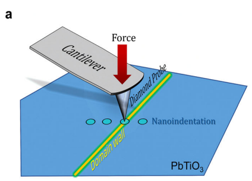
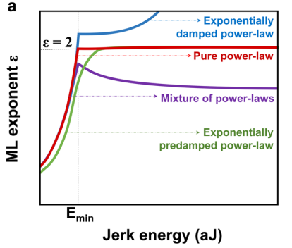
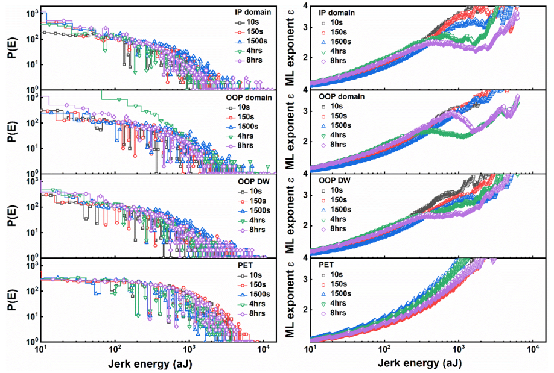

狙い
非平衡臨界現象は、熱力学的な平衡状態にない系において観察される統計力学的な現象です。これらの系は一般的には時間に依存し、外部からエネルギーまたは物質が供給されています。例としては、流体の乱流、砂山の崩壊、トラフィックフローなどがあります。また、熱力学的な平衡にない系での長距離相関やクリティカルな動きを研究対象とします。このような系は通常、マイクロスコピックなレベルでのランダムな動きと、マクロスコピックなレベルでの相互作用や制約条件によって特徴づけられます。非平衡系は熱力学第二法則によって駆動されるため、時間の進行に伴い状態が変化するのが一般的です。
論文タイトル一覧
1. クラックリングノイズ顕微鏡法：材料中のナノスケールの雪崩現象を研究する新しい方法
・AFMナノインデンテーションを用いて、材料が変形するときに原子が移動する際に発生するクラックリングノイズをナノスケールで測定する方法を開発した。
・フェロエレクトリックPbTiO3単結晶中のドメインとドメイン壁というトポロジカル欠陥におけるクラックリングノイズと雪崩現象を調べた。
・ドメインとドメイン壁では、雪崩の臨界指数が異なり、ドメイン壁では混合臨界性が抑制されることを示した。
雪崩のエネルギー分布と最尤法による指数から、PbTiO3のドメインとドメイン壁にはそれぞれ独自のクラックリングノイズが存在することを明らかにした。
・広範囲の材料系や応用分野において、個々のナノスケールの特徴に関する先進的な知識を生成する可能性を提供する新しい概念を提示した。
・フェロエレクトリックPbTiO3単結晶中のドメインとドメイン壁というトポロジカル欠陥におけるクラックリングノイズと雪崩現象を調べた。
・ドメインとドメイン壁では、雪崩の臨界指数が異なり、ドメイン壁では混合臨界性が抑制されることを示した。
雪崩のエネルギー分布と最尤法による指数から、PbTiO3のドメインとドメイン壁にはそれぞれ独自のクラックリングノイズが存在することを明らかにした。
・広範囲の材料系や応用分野において、個々のナノスケールの特徴に関する先進的な知識を生成する可能性を提供する新しい概念を提示した。
コメント：スキルミオンの制御は難しいイメージがあるが、層間スタッキングやMnドープという簡単な手法で反スキルミオンを実現している点は面白いと思う。
用語：クラックリングノイズ：外部刺激に応答して非線形動的材料系で起こるスケール不変現象で、ジャークや雪崩と呼ばれる不連続な材料運動が発生し、音波を伴う現象。元々は磁性材料のバルクハウゼンノイズとして研究されていたが、現在では地震学や建築材料の監視、相転移やニューラルネットワークなどの基礎研究など、多様な分野で用いられている。雪崩現象：外部刺激によって材料中の原子や欠陥が移動する際に発生する不連続な運動で、サイズや持続時間がパワーロー分布に従うスケール不変現象。雪崩現象は多様な物理系で見られる普遍的な振る舞いであり、臨界指数やスケーリング関数などで記述される。雪崩現象は材料の物性や応答性に影響を与える重要な要素である。ドメイン壁：異方的な秩序パラメータを持つ材料中で、異なる方向や相に揃った領域（ドメイン）の境界に存在するトポロジカル欠陥。ドメイン壁は外部刺激によって移動や変形することができ、その際にクラックリングノイズや雪崩現象を引き起こす。ドメイン壁はドメインとは異なるナノスケールの物性を示すことがあり、新しい機能性材料やデバイスの構成要素として注目されている。 手法論：AFMナノインデンテーションとは、原子間力顕微鏡（AFM）のプローブを用いて、材料表面に微小な力を加えて変形させる方法である。AFMプローブは力を加えると同時に、材料の反応として生じる凹みの深さを測定することができる。凹みの深さの時間変化から、クラックリングノイズの強度や雪崩のエネルギー分布などを求めることができる。本研究では、AFMナノインデンテーションを用いて、フェロエレクトリックPbTiO3単結晶中のドメインとドメイン壁におけるクラックリングノイズを測定した。具体的な手順は以下の通りである。1. PbTiO3単結晶を固相反応法とプラチナ坩堝法で合成した。2. AFMプローブ（ダイヤモンド製）を用いて、PbTiO3単結晶表面に最大30 µNの力を8時間かけて加えた。この間に、表面の変位を検出した。3. AFMプローブが加えた力に対するPbTiO3単結晶の反応として生じた凹みの深さの時間変化から、クラックリングノイズの強度や雪崩のエネルギー分布を求めた。4. 最尤法によって、雪崩の臨界指数やパワーロー分布の指数を算出した。5. ドメインとドメイン壁でクラックリングノイズや雪崩現象に違いがあるかどうかを比較した。
用語：クラックリングノイズ：外部刺激に応答して非線形動的材料系で起こるスケール不変現象で、ジャークや雪崩と呼ばれる不連続な材料運動が発生し、音波を伴う現象。元々は磁性材料のバルクハウゼンノイズとして研究されていたが、現在では地震学や建築材料の監視、相転移やニューラルネットワークなどの基礎研究など、多様な分野で用いられている。雪崩現象：外部刺激によって材料中の原子や欠陥が移動する際に発生する不連続な運動で、サイズや持続時間がパワーロー分布に従うスケール不変現象。雪崩現象は多様な物理系で見られる普遍的な振る舞いであり、臨界指数やスケーリング関数などで記述される。雪崩現象は材料の物性や応答性に影響を与える重要な要素である。ドメイン壁：異方的な秩序パラメータを持つ材料中で、異なる方向や相に揃った領域（ドメイン）の境界に存在するトポロジカル欠陥。ドメイン壁は外部刺激によって移動や変形することができ、その際にクラックリングノイズや雪崩現象を引き起こす。ドメイン壁はドメインとは異なるナノスケールの物性を示すことがあり、新しい機能性材料やデバイスの構成要素として注目されている。 手法論：AFMナノインデンテーションとは、原子間力顕微鏡（AFM）のプローブを用いて、材料表面に微小な力を加えて変形させる方法である。AFMプローブは力を加えると同時に、材料の反応として生じる凹みの深さを測定することができる。凹みの深さの時間変化から、クラックリングノイズの強度や雪崩のエネルギー分布などを求めることができる。本研究では、AFMナノインデンテーションを用いて、フェロエレクトリックPbTiO3単結晶中のドメインとドメイン壁におけるクラックリングノイズを測定した。具体的な手順は以下の通りである。1. PbTiO3単結晶を固相反応法とプラチナ坩堝法で合成した。2. AFMプローブ（ダイヤモンド製）を用いて、PbTiO3単結晶表面に最大30 µNの力を8時間かけて加えた。この間に、表面の変位を検出した。3. AFMプローブが加えた力に対するPbTiO3単結晶の反応として生じた凹みの深さの時間変化から、クラックリングノイズの強度や雪崩のエネルギー分布を求めた。4. 最尤法によって、雪崩の臨界指数やパワーロー分布の指数を算出した。5. ドメインとドメイン壁でクラックリングノイズや雪崩現象に違いがあるかどうかを比較した。
2023-08-16
Crackling noise microscopy
Cam-Phu Thi Nguyen et al. (UNSW Sydney, Australia)
Nature Communications 14, 4963 (2023)
Crackling noise microscopy
Cam-Phu Thi Nguyen et al. (UNSW Sydney, Australia)
Nature Communications 14, 4963 (2023)


